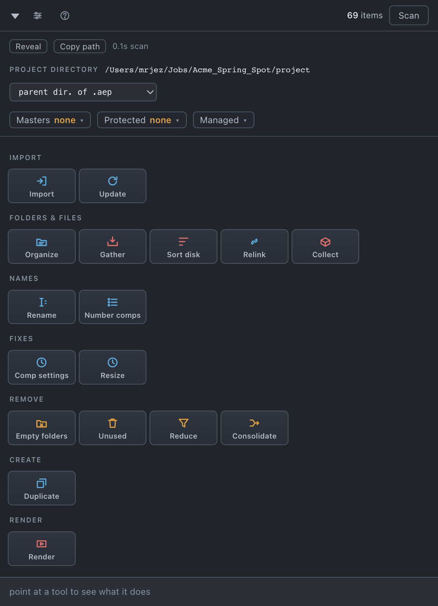

Start here
What Toolbox is, how every tool in it behaves, and the five minutes of setup that make the rest work.
Toolbox is a dockable panel for After Effects on macOS. It reads your project as a real dependency graph — which comp uses which precomp, which layer uses which file — and uses that to reorganize, clean up, audit, render and import. It is one grid of seventeen tools in seven categories, in the order a job runs:
| Category | What it is for |
|---|---|
| Import | Two tools: a browser for bringing footage in, and a checker that finds newer versions of the footage you already use. |
| Folders & files · Names · Fixes · Remove · Create | Fourteen tools that tidy the project itself and the files beside it: filing into folders, renaming, resizing, removing what nothing uses, collecting a job for hand-off. |
| Render | The render queue with the parts After Effects leaves out: filenames built from tokens, version numbers that count up on their own, remembered destinations, and rendering in a second After Effects while you keep working. |
Every tool is a tile. Press it and it either does its one thing or opens a full-panel sheet with its options; Cancel or Close brings the grid back.

How every tool behaves
You can read this once and trust it everywhere in the panel.
- Click first, look second. Pressing a tool scans the project, works out what it would do, and shows you the list. Nothing happens until you press the button in the top right of that sheet — and the button carries the count (
Organize 5,Resize 4). - Inside the project is one ⌘Z away — including deletes. Anything Toolbox does to items in the Project panel is one undo group. So those tools do not ask you to confirm; the sheet is the decision.
- Files on disk are not undoable, so only the disk tools confirm. Gather, Sort disk and Collect say how many files, how big, and whether they are copying or moving before they touch anything. Copying leaves originals where they are; moving does not.
- Selection or whole project. If you have selected something in the Project panel that the tool can act on, the sheet offers Selection (n) beside Whole project, and picks the selection. If your selection is not something it can act on, it says so — nothing in the selection this can act on — showing the whole project — and works on everything. A tool with no sheet always means the whole project.
- Dim means "select something first." Buttons that need a selection dim rather than disappear.
- Point at a tool. The footer says what it does and, once the project is scanned, how many items it would touch right now.
- "Left alone: …" lines are the tool telling you what it skipped and why. 7 left alone: outside the project — use Bring stray files into the project. Read them; they usually name the tool to run next.
- Protected items are never touched by anything. See Set up each project.
The five-minute setup
Most of Toolbox works with no setup at all. Four things are worth doing when you open a job, because they change what several tools do:
- Save the project. Where its files belong is measured from where it lives.
- Check the project directory in the header. Toolbox guesses it; correct it if the guess is wrong.
- Declare your masters — the comps that are the point of the project. One dropdown, one click. Until you do, no tool will treat any comp as unused.
- Pick a template, or keep the default. It is the folder scheme every organize tool follows.
All of it, and why, on Set up each project and Set up once.
Install and update
- Download
ae-toolbox-latest.pkg. - Double-click it and follow the installer. It asks for no password and installs only into your own user folder.
- Quit After Effects completely and reopen it — extensions are only scanned at launch.
- Open it from Window › Extensions › Toolbox.
Toolbox updates itself. It checks for a new release on the cadence set in Settings — every time the panel opens, daily, weekly, or never; the default is daily — and shows a strip in the panel when there is one. What's new shows the notes; the install button installs; Later stops asking about that version only. Restart After Effects to pick the new build up. The previous version is kept alongside, so a build that misbehaves can be put back from Settings. This is the only thing Toolbox uses the network for.
Templates, preferences and saved locations live in ~/Library/Application Support/Toolbox/ and are never touched by an install or an update.
Where to next
- New to it: Set up each project, then Things you might not think to do.
- Looking for a tool: the sidebar is in the same order as the panel.
- Something looks wrong: When something looks wrong.